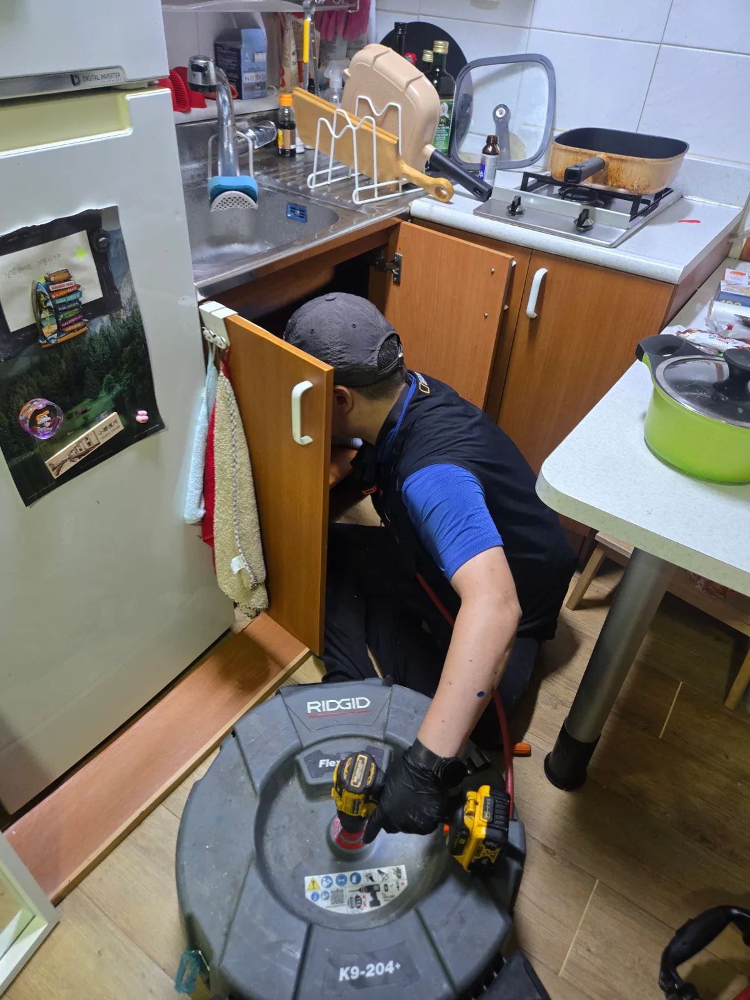
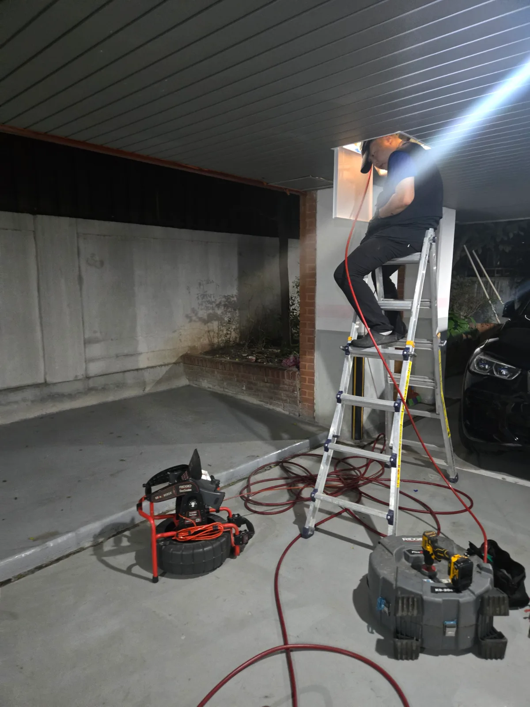

서초구 양재동 싱크대막힘, 현장 도착 후 진단
서초구 양재동 싱크대막힘 현장에 도착해 싱크대 하부장 안쪽 배관부터 점검했습니다.
싱크대막힘은 주방 안쪽 배관에만 문제가 생기는 경우도 있지만, 배수가 연결되는 공용배관 구간에 오염물이 누적되면 실내 배수구만 뚫어서는 증상이 반복될 수 있습니다. 이번 양재동 현장도 싱크대 배수 불량의 원인을 실내 배관에만 한정하지 않고 공용배관까지 연결해 확인해야 하는 상황이었습니다.
신라건축설비는 변기막힘, 싱크대막힘, 하수구막힘을 전문적으로 처리해 온 숙련 기술자가 배관 구조와 막힘 위치를 먼저 확인한 뒤 현장에 맞는 장비와 공법을 선택합니다.
1단계: 증상 확인과 필요한 장비 작업
먼저 싱크대 하부 배관에 리지드 플렉스샤프트를 투입했습니다.
샤프트를 회전시키며 실내 배관 안쪽에 남아 있던 오염물과 잔여물을 1차로 정리했습니다. 공용배관 막힘이 의심되는 현장은 실내 배관의 물길만 잠시 확보하는 데 그치지 않고, 연결된 외부 배관 구간까지 작업 범위를 판단해야 합니다.

2단계: 원인 구간 처리와 정상 작동 확인
공용배관 접근이 가능한 외부 구간에는 사다리를 설치하고 고압세척 장비를 준비했습니다.
고압세척 호스를 공용배관 안쪽으로 투입해 샤프트 작업만으로 정리하기 어려운 누적 오염물과 찌꺼기를 세척했습니다. 실내 싱크대 하부 배관에서 시작한 작업을 외부 공용배관까지 이어가며, 막힘이 발생한 배수 라인을 단계적으로 정리했습니다.

작업 결과와 재발 방지 안내
이번 서초구 양재동 싱크대막힘은 실내 샤프트 작업과 공용배관 고압세척을 함께 진행해 해결한 사례입니다. 작업 후 싱크대에서 물을 흘려보내 배수 상태를 확인했으며, 막힘 없이 원활하게 내려가는 것을 확인했습니다.
싱크대가 막혔을 때 공용배관까지 점검해야 하는 이유는 무엇일까요? 여러 세대 또는 공용 라인으로 연결된 구간에 오염물이 쌓이면 실내 배관만 정리해도 배수 불량이 다시 나타날 수 있기 때문입니다. 싱크대 물이 반복해서 느리게 내려가거나 다른 배수구에도 이상이 함께 나타난다면 공용배관과 메인 배수 라인의 점검이 필요할 수 있습니다.
기름은 식힌 뒤 닦아 별도로 처리하고, 음식물 찌꺼기는 배수구로 흘려보내지 않는 것이 좋습니다. 배수 속도가 느려지거나 꿀렁거림이 반복된다면 완전히 막히기 전에 배관 상태를 점검하는 편이 안전합니다.
신라건축설비는 서초구 양재동을 비롯한 서울과 경기권 싱크대막힘 현장에 신속하게 출동합니다. 단순 생활 막힘부터 배관 내시경 점검, 석션, 샤프트, 고압세척, 공용배관과 오수관 문제, 배관 보수와 교체공사까지 현장 상황에 맞춰 자체 대응합니다.
최종 조치: 실내 싱크대 하부 배관은 플렉스샤프트로 1차 정리하고, 외부 접근 구간의 공용배관은 고압세척으로 세척했습니다. 작업 후 싱크대 배수 상태를 확인해 막힘 없이 물이 내려가는 것을 확인했습니다.
현장 방문 전 확인하는 비용과 작업 범위
신라건축설비는 현장 증상과 배관 구조를 확인한 뒤 필요한 작업과 예상 비용을 안내합니다. 단순 관통으로 해결되는지, 배관내시경·석션·고압세척 또는 추가 장비가 필요한지는 현장 상태에 따라 달라집니다. 출장비와 야간 작업비, 추가 장비 비용이 발생할 수 있는 경우 작업 전에 먼저 설명하고 동의를 받은 범위에서 진행합니다.
업체를 선택할 때 확인할 사항
무조건적인 ‘0원’ 표현보다 실제 작업 범위, 추가 비용 조건, 사용 장비와 사후 대응 기준을 확인하는 것이 중요합니다. 해결되지 않았을 때의 비용 기준과 작업 후 동일 증상 발생 시 점검 범위를 사전에 문의해두면 불필요한 분쟁을 줄일 수 있습니다.
서초구 싱크대막힘 자주 묻는 질문
싱크대막힘은 왜 반복되나요?
서초구 양재동 현장처럼 싱크대 배수가 원활하지 않았으며, 실내 하부 배관만이 아니라 공용배관 구간까지 확인이 필요한 상태였습니다. 증상은 원인이 현장마다 다를 수 있습니다. 주방 배수관 내부에 기름때·슬러지·음식물 찌꺼기가 누적되거나 배관 구배와 긴 횡주관 때문에 반복될 수 있습니다. 단순 관통 후 다시 막힌다면 배수관 내부 상태를 확인하는 것이 좋습니다.
싱크대 물이 안 내려가거나 역류하면 싱크대뚫는업체를 불러야 하나요?
물이 천천히 빠지거나 싱크대역류가 반복되면 배수구 입구보다 안쪽 주방 배관에 막힘이 있을 수 있습니다. 현장에서는 배수 상태와 막힌 구간을 확인한 뒤 작업 방법을 정합니다.
싱크대 기름때 막힘은 약품으로 해결되나요?
가벼운 오염은 일시적으로 나아질 수 있지만 굳은 기름 슬러지와 배관 내부 스케일은 약품만으로 충분히 제거되지 않는 경우가 있습니다. 반복 막힘은 장비를 이용한 배관 청소가 필요할 수 있습니다.
싱크대뚫는업체는 어떤 장비로 작업하나요?
막힘 위치와 배관 상태에 따라 석션, 샤프트, 배관내시경, 배관 스케일링 장비 등을 사용합니다. 필요한 장비는 현장 진단 후 결정합니다.
싱크대막힘 비용은 어떻게 정해지나요?
막힘 구간의 길이와 오염 정도, 석션·샤프트·내시경 등 장비 투입 범위에 따라 달라질 수 있습니다. 작업 전 예상 범위와 추가 비용 조건을 먼저 안내합니다.
싱크대 악취도 배수관 막힘과 관련 있나요?
기름 슬러지와 음식물 오염이 배수관 내부에 쌓이면 배수 불량과 함께 악취가 나타날 수 있습니다. 다만 트랩이나 연결부 문제도 있어 현장 상태를 함께 확인해야 합니다.
싱크대막힘 서울·경기 출동지역
신라건축설비는 서초구 양재동 현장을 포함해 서울 25개 구와 경기도 31개 시·군의 배관 문제를 상담합니다. 현장 거리와 기사 배정 상황에 따라 출동 가능 여부를 먼저 안내드립니다.
서울 전 지역
강남구 · 강동구 · 강북구 · 강서구 · 관악구 · 광진구 · 구로구 · 금천구 · 노원구 · 도봉구 · 동대문구 · 동작구 · 마포구 · 서대문구 · 서초구 · 성동구 · 성북구 · 송파구 · 양천구 · 영등포구 · 용산구 · 은평구 · 종로구 · 중구 · 중랑구
경기도 주요 출동지역
수원시 · 용인시 · 고양시 · 화성시 · 성남시 · 부천시 · 남양주시 · 안산시 · 평택시 · 안양시 · 시흥시 · 파주시 · 김포시 · 의정부시 · 광주시 · 하남시 · 광명시 · 군포시 · 양주시 · 오산시 · 이천시 · 안성시 · 구리시 · 의왕시 · 포천시 · 양평군 · 여주시 · 동두천시 · 과천시 · 가평군 · 연천군